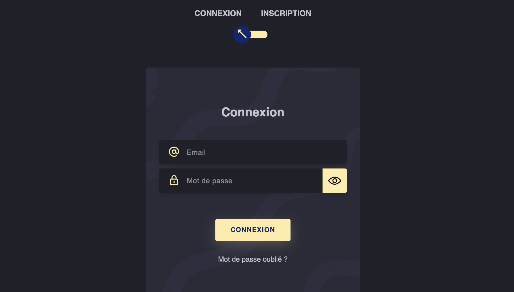
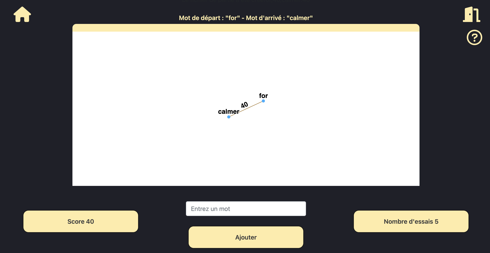
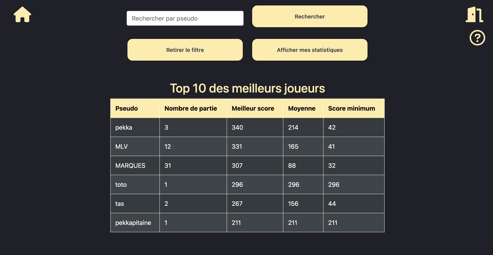

Le projet "Words Chain" est un jeu en ligne innovant qui stimule les connaissances linguistiques à travers les associations de mots, inspiré par le jeu Cémantix.
L'équipe a intégré une variété de sources de données pour développer un système de scoring sophistiqué, répondant aux attentes des joueurs.
La mise en place du moteur de chaînes de mots illustre notre approche méthodique pour incorporer des compétences techniques au sein d'une organisation, reflétant la synergie entre l'équipe.
La création de notre base de données pour le jeu a nécessité une étroite collaboration, démontrant l'importance vitale de la communication et du travail d'équipe pour le succès d'un projet informatique.
Pour chaque semestre, un compte rendu structuré en trois niveaux a été élaboré, reflétant l'engagement professionnel de l'équipe et leur compétence à simplifier des fonctionnalités complexes dans un document compréhensible par tous.
Chaque élément de "Words Chain" a été méticuleusement conçu pour satisfaire une gamme de besoins spécifiques, assurant que le jeu soit non seulement fonctionnel mais aussi captivant pour les joueurs.
Vous pouvez tester le jeu en cliquant sur le lien :